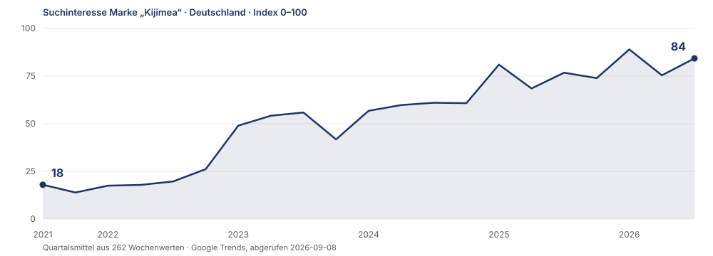
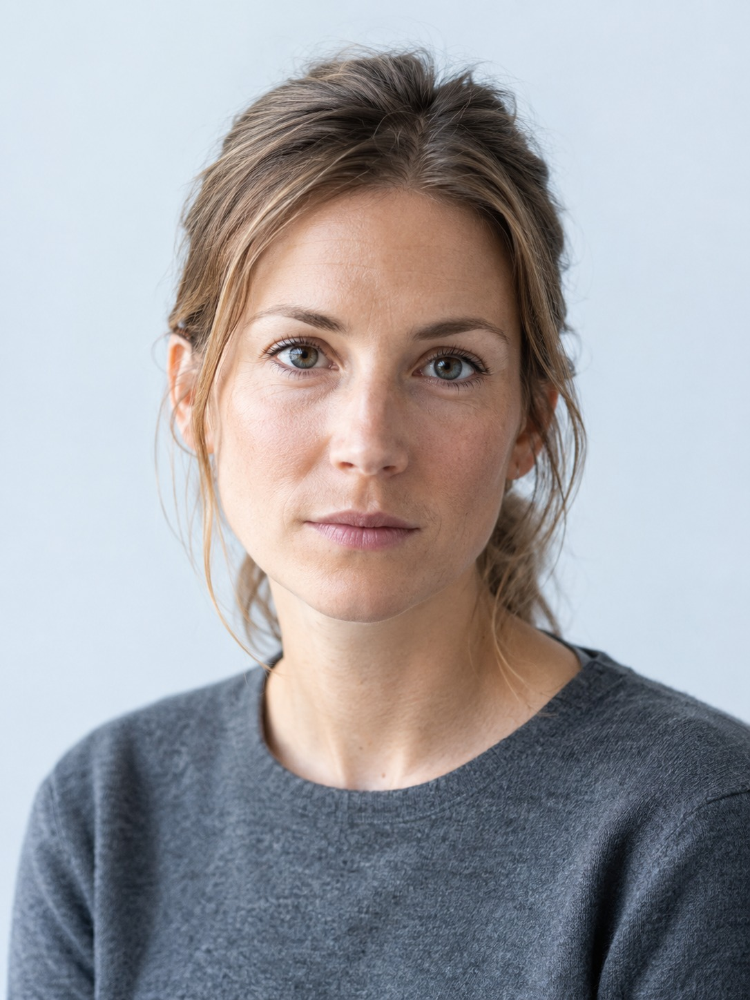
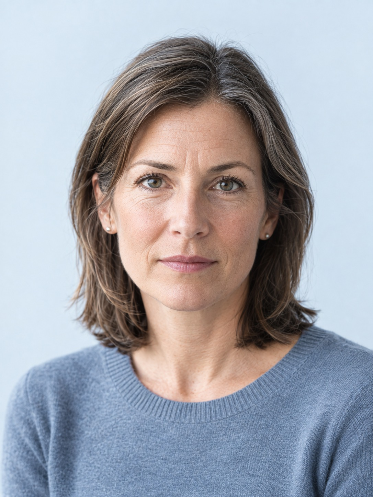
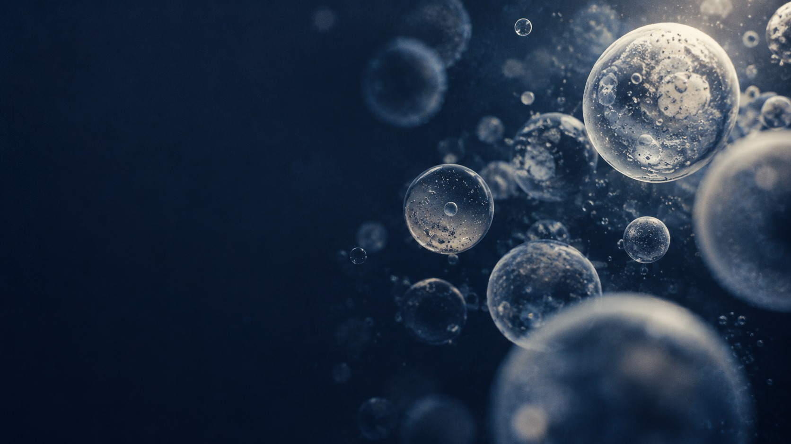
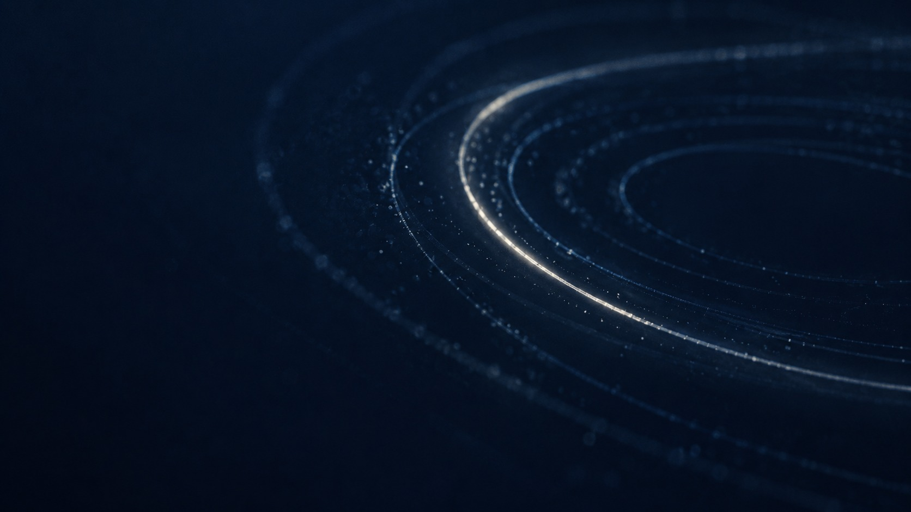
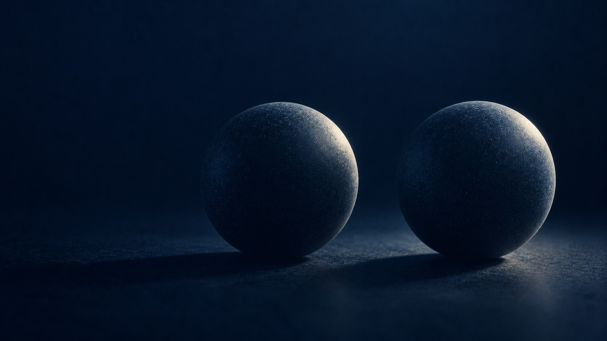
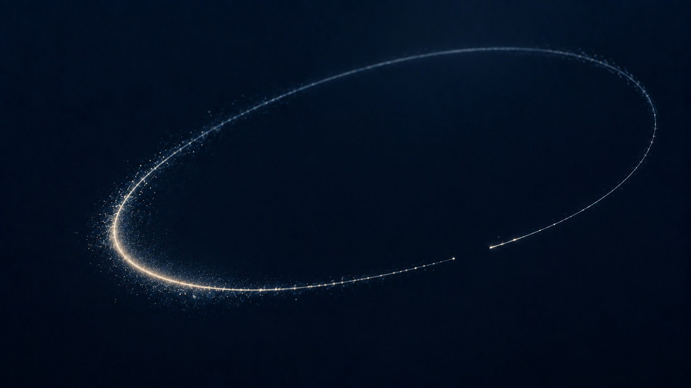

Bildassets — Kijimea Case Study
Ablage der Bilder zu praesentation.md. Diese Seite dient der Sichtprüfung: erscheint jedes Bild, sind alle Links erreichbar.
Die vier Porträts und die acht Motivbilder sind mit künstlicher Intelligenz erzeugt. Die abgebildeten Personen existieren nicht.
Basis-URL: https://thomasreinel.github.io/kijimea-case-bilder/bilder/
[logo]
kijimea-logo.svg
SVG, Vektor, verlustfrei

[trend-marke]
markensuchvolumen-kijimea-de.svg
SVG, Vektor, verlustfrei

[persona-1]
persona-1-jana.jpg
JPEG 1086 × 1448 px · KI-erzeugt
[persona-2]
persona-2-michael.jpg
JPEG 1086 × 1448 px · KI-erzeugt

[persona-3]
persona-3-sabine.jpg
JPEG 1086 × 1448 px · KI-erzeugt
[persona-4]
persona-4-nadine.jpg
JPEG 1086 × 1448 px · KI-erzeugt

[bild-titel]
motiv-titel.jpg
JPEG 1672 × 941 px · KI-erzeugt
[bild-vorgehen]
motiv-vorgehen.jpg
JPEG 1536 × 1024 px · KI-erzeugt

[bild-kapitel-1]
motiv-kapitel-1-kanaele.jpg
JPEG 1672 × 941 px · KI-erzeugt
[bild-kapitel-2]
motiv-kapitel-2-team.jpg
JPEG 1672 × 941 px · KI-erzeugt
[bild-kapitel-3]
motiv-kapitel-3-abo.jpg
JPEG 1672 × 941 px · KI-erzeugt

[bild-kapitel-4]
motiv-kapitel-4-abtest.jpg
JPEG 1672 × 941 px · KI-erzeugt

[bild-kapitel-5]
motiv-kapitel-5-retouren.jpg
JPEG 1672 × 941 px · KI-erzeugt
[bild-schritt]
motiv-naechster-schritt.jpg
JPEG 1672 × 941 px · KI-erzeugt